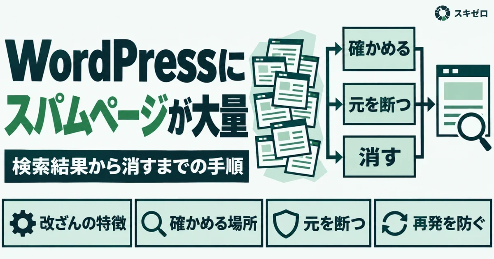
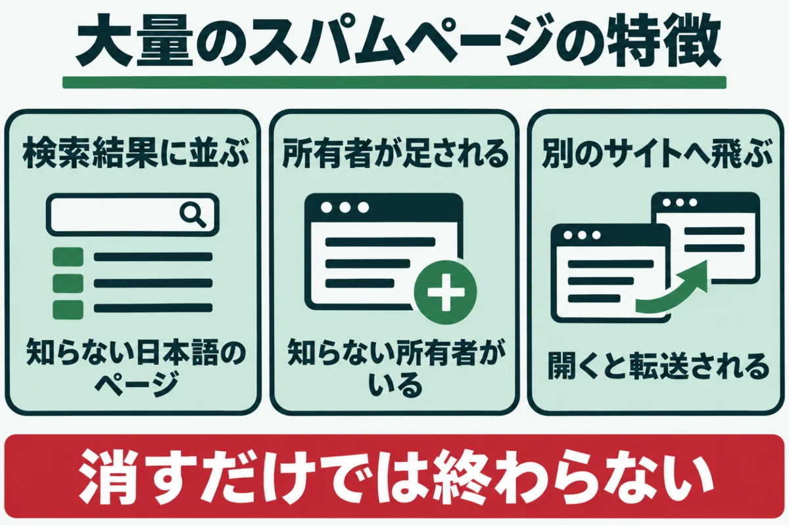
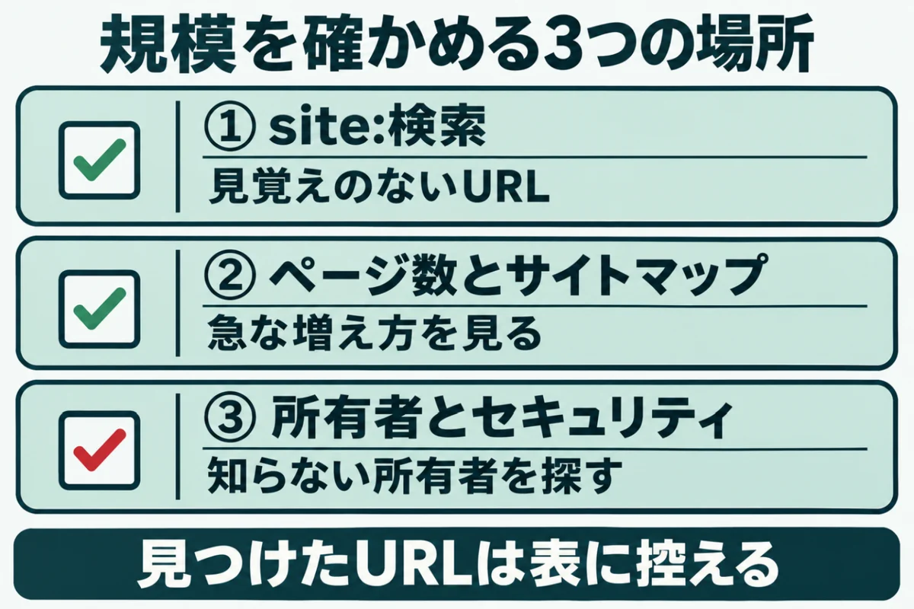
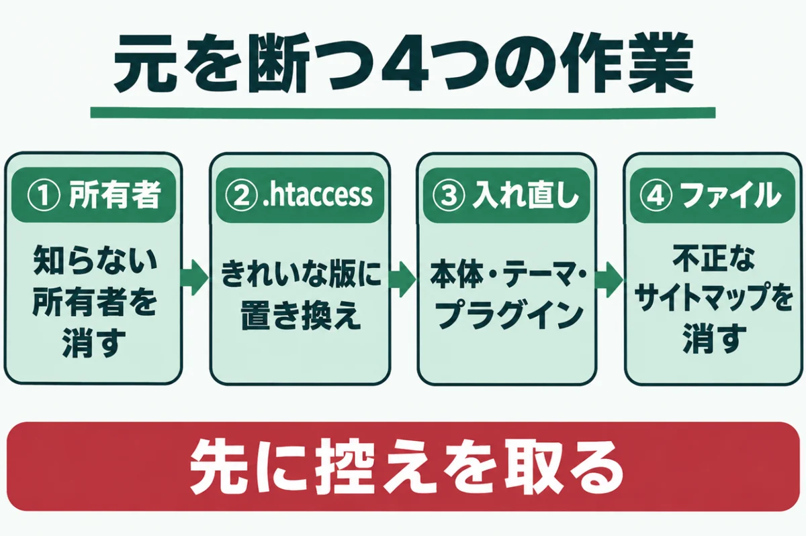
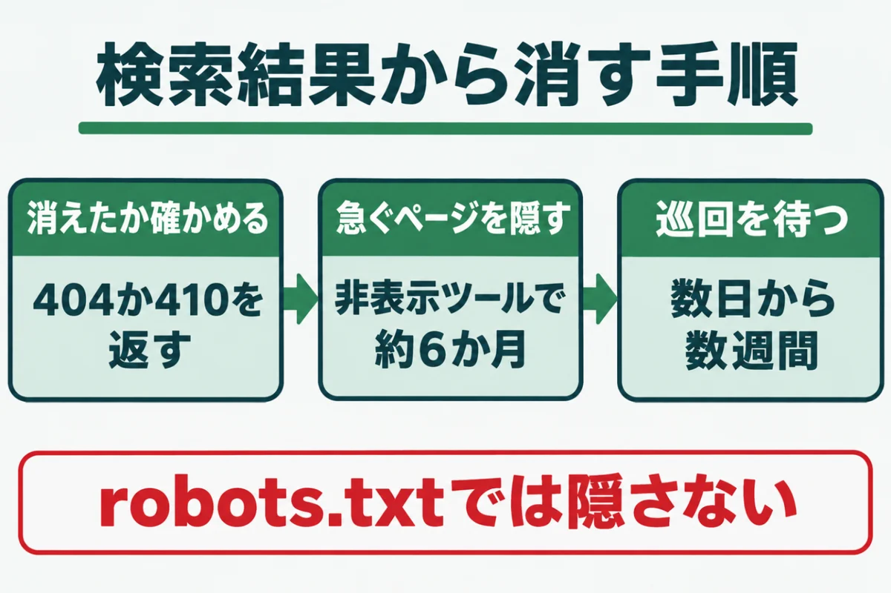
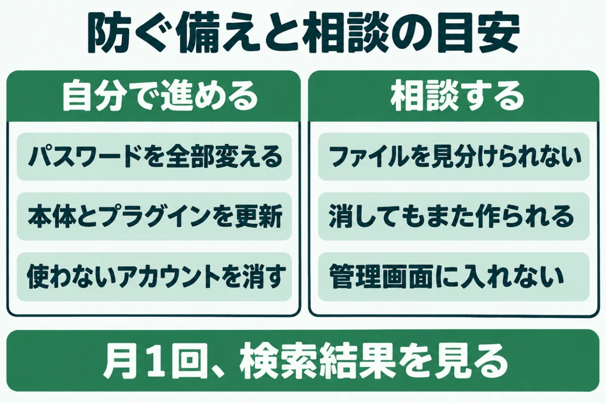

WordPressにスパムページが大量に作られたときの対処検索結果から消すまでの手順

「会社名で検索したら、身に覚えのない通販のページが自社のドメインで並んでいた」と驚いていませんか？
知らない日本語や外国語のページが大量に出るのは、サイトの改ざんで起きる症状です。Search Consoleのページ数が急に増えるのも、同じ改ざんのサインでしょう。
この記事では、規模を確かめ、元を断ち、検索結果から消すまでを順に紹介します。自分で進めるのが難しいときに、相談する目安もまとめました。
内容は、GoogleとWordPressの公式の情報を2026年11月に確かめたものです。見えているページだけをあわてて消す前に、進める順番を押さえておきましょう。
WordPressにスパムページが大量に作られる改ざんの特徴

WordPressにスパムページが大量に作られる改ざんは、ページを消すだけでは終わりません。サイトのどこかに、ページを作り続ける仕掛けが残っているからです。
Googleは、許可なく置かれたこうしたページを「ハッキングされたコンテンツ」と呼んでいます。改ざんかどうかの見分けに迷うときは、先に別の記事で確かめてください。ホームページに勝手に変な広告やページが出る原因｜パソコン側かサイトの改ざんかを見分ける方法です。
知らない日本語のページが検索結果に並ぶ
Googleが運営するweb.devは、この型を「日本語キーワードによるハッキング」と呼びます。でたらめな名前のフォルダに、自動で作られた日本語のページが置かれるのが特徴です。ページには、偽のブランド品を売る店への広告のリンクが入れられます。検索結果に出して、人を集めるのが狙いでしょう。意味の通らない文や外国語のページが作られる型も、別の案内で説明されています。開くと別のサイトへ飛ばされることもあるので、むやみに開かないでください。
消す前に、記録とバックアップを取る
片付けを始める前に、今の状態を残しておきます。web.devの案内も、消す前にファイルの控えをサーバーの外へ取るよう勧めているのです。WordPressの場合は、データベースの控えもあわせて取ってください。控えがないまま消すと、あとで元に戻せません。検索結果の画面と、見つけた日時も記録しておきましょう。記録から復旧までの全体の流れは、ホームページ改ざんの復旧手順｜発見から再発防止までにまとめました。
WordPressのスパムページが大量にあるかを確かめる3つの場所

WordPressのスパムページが大量にあるかは、検索とSearch Consoleで確かめます。どのくらいの数が、いつから、どのフォルダにあるのかをつかむのが目的です。
見つけたURLは、表にして控えておいてください。あとで消えたかを確かめるときの台帳になります。Search Consoleをまだ使っていない場合は、この機会に登録しましょう。
① site:検索で見覚えのないURLを探す
Googleの検索窓に「site:自社のドメイン」と入れて検索します。Googleが登録している自社のページが、一覧で出てくる検索のしかたです。結果を何ページかめくり、見覚えのない題名やURLがないかを見てください。Googleで見つからないときは、別の検索エンジンでも同じ検索を試しましょう。検索結果のURLが「ページがありません」と出る場合も、安心はできません。人には消えたように見せ、検索エンジンにだけ中身を出す細工があるからです。
② Search Consoleのページ数とサイトマップを見る
Search Consoleの「ページ」のレポートには、登録されたページの数の推移が出ます。ヘルプは、数が急に増えたり減ったりしたら原因を調べるよう案内しているのです。グラフが急に跳ね上がった日が、被害の始まりの目安になります。一覧に出るURLの例は1,000件までなので、全部は見えません。あわせて「サイトマップ」のレポートも開きましょう。送った覚えのないサイトマップがあれば、スパムページを早く登録させるためのものと考えられます。
③ 所有者の一覧とセキュリティの問題を見る
Search Consoleの「設定」から「ユーザーと権限」を開くと、所有者の一覧が出ます。この型の改ざんでは、相手が自分を所有者に足すことが多いとされているのです。知らないアドレスが所有者にいないかを見ましょう。ヘルプによると、所有者が足されたときは、確認済みの所有者の全員に知らせが届きます。「セキュリティの問題」のレポートも開いてください。改ざんのほかのサインは、ホームページが改ざんされたかも？確認したい7つのサインと自分でできる確かめ方にまとめました。
WordPressに大量のスパムページを作る元を断つ4つの作業

WordPressに大量のスパムページを作る元は、見えているページより先に取り除きます。順番は、web.devの案内に沿って4つに分けました。
作業の前に、サーバー会社にも改ざんを知らせておきましょう。同じサーバーのほかの利用者に影響がないかを、確かめてもらえるからです。ファイルを触る作業に不安があるときは、無理をせず制作会社に任せてください。
① 知らない所有者と確認用のファイルを消す
知らない所有者は、「ユーザーと権限」の画面で権限を削除します。ただし、確認用のファイルなどで所有者になった相手は、消してもまた戻れるのです。同じ画面の「未使用の所有権トークン」で、残っている確認の手段を見てください。サーバーに残る確認用のHTMLファイルも消す必要があります。見当たらないときは、.htaccessが確認用のファイルを見せかけている場合もあるでしょう。ヘルプは、これだけでは一時しのぎだとも書いています。
② .htaccessをきれいな版に置き換える
.htaccessは、サーバーの動きを決める設定ファイルです。WordPressの公式の手引きは、改ざんで書き換えられやすいファイルとして挙げています。web.devは、自分で設定を足していなければ新しい内容に置き換えるよう勧めているのです。WordPressの標準の内容は、公式のドキュメントに載っています。セキュリティのプラグインが設定を書き込んでいることもあるでしょう。元のファイルの控えを取ってから置き換えてください。フォルダごとに置かれていないかも、あわせて探します。
③ 本体・テーマ・プラグインを入れ直す
WordPressの本体とテーマ、プラグインは、公式の配布元から取ったもので入れ直しましょう。元からあるファイルに、不正な中身が残らなくなります。WordPressの公式の手引きは、今と同じ版を使うよう注意しているのです。管理画面の再インストールではなく、FTPなどでの置き換えを勧めています。対象は「wp-admin」と「wp-includes」のフォルダです。上書きだけでは、足された不正なファイルが残ると説明されています。テーマに手を入れているサイトは、先に控えを取ってください。
④ 不正なサイトマップと不審なファイルを消す
次に、サイトマップのファイルを開いて中身を見ます。覚えのないサイトマップで、スパムページのURLしか載っていないものは削除しましょう。不審なファイルは、更新日とサイズで並べ替えると探しやすくなります。web.devは、気づいた時期から数か月以内に変わったファイルを見るよう案内しているのです。読めない文字が長く続くPHPファイルは要注意でしょう。index.phpなど、狙われやすいファイルも挙げられています。判断に迷うファイルは、消す前に詳しい人に見てもらってください。
WordPressの大量のスパムページを検索結果から消す手順

WordPressの大量のスパムページは、元を断ったあとで検索結果から消していきましょう。消えるまでには、ある程度の時間がかかります。Googleがそのページをもう一度見にきて、なくなったと分かる必要があるからです。
手順は、消えたことの確認、急ぐものを隠す、巡回を待つ、の3つに分かれます。「セキュリティの問題」に表示がある場合は、直したあとに審査の依頼も必要です。審査と警告の外し方は、別の記事にまとめました。「このサイトは危険です」と警告が出たときの対処｜原因の確かめ方と解除までの流れを見てください。
消したページが404か410を返すかを確かめる
控えておいたスパムページのURLを、Search ConsoleのURL検査ツールに入れます。「公開URLをテスト」を押すと、Googleから見た今の状態が分かるのです。人にだけ「見つかりません」と見せる細工が残っていないかも、確かめられます。Googleの説明では、登録済みのURLが404や410を返すと、検索の登録から外されるのです。404と410は、同じように扱われます。巡回を断るrobots.txtで隠す方法は使わないでください。ヘルプも、隠す手段に使わないよう書いています。
急ぐページは非表示ツールで一時的に隠す
すぐに隠したいページには、Search Consoleの非表示ツールが使えます。以前から「削除ツール」と呼ばれてきた機能です。ヘルプによると、申請したURLを約6か月のあいだ検索結果から隠せます。同じ文字で始まるURLを、まとめて申請することも可能です。隠せるのは一時的で、ページを消す代わりにはなりません。ページが残っていると、期間が過ぎたあとにまた出てくるのです。申請の処理には、通常は長くて1日ほどかかると書かれています。サイト全体を隠す申請は、勧められていません。
再クロールには数日から数週間かかる
ページを消したあとは、Googleがもう一度見にくるのを待ちます。Googleの説明では、クロールには数日から数週間かかることがあるのです。Googleには、URLを1件ずつ見直してもらう申請の仕組みもあります。ただし、頼める数には上限があり、何度頼んでも早くはなりません。大量のURLを1件ずつ申請する必要はないでしょう。404を返すページは、巡回のときに自然に検索結果から外れていくからです。「ページ」のレポートで、登録の数が減っていくかを週に1回ほど見てください。
WordPressにスパムページが大量に戻るのを防ぐ備えと相談の目安

WordPressにスパムページが大量に戻るのを防ぐには、入られた入り口をふさぐ作業が欠かせません。ファイルをきれいにしても、入り口が開いたままなら同じことが起きるからです。
入り口が分からないときは、考えられる場所をひととおり見直しましょう。パスワード、古い部品、使っていないアカウントの3つが中心になります。自分の手に余ると感じたら、早めに相談することも大切です。
パスワードを変え、使わないアカウントを消す
WordPressの公式の手引きは、入り口になるすべてのパスワードを変えるよう勧めています。管理画面、FTP、サーバーの管理画面、データベースの4つです。片付けが終わったあとに、もう一度変えることも勧められています。ユーザーの一覧も、1人ずつ見直してください。運営者の自社サイトでも、15件の点検で心当たりのない編集者のアカウントが2つ見つかりました。使っていないアプリケーションパスワードも残っていたのです。ログインには、2段階認証を足しておくと安心でしょう。
本体とプラグインを更新し、使わないものを消す
きれいにしたあとは、本体とテーマ、プラグインを最新の版に上げます。WordPressの公式の手引きも、古い版ほど狙われやすいとして更新を勧めているのです。使っていないプラグインは、止めるだけでなく削除しましょう。管理画面からファイルを編集する機能も止められます。公式のドキュメントにある設定で、wp-config.phpに1行を足す方法です。そのうえで、月に1回はsite:検索とSearch Consoleの数を見てください。早く気づければ、片付けるページの数も少なくて済みます。
自分で難しいと感じたら相談する目安
web.devは、自分で直すにはコードを読む力やサーバーの知識が要るとしています。次のどれかに当てはまれば、相談を考えましょう。不審なファイルの見分けがつかない場合や、消してもページがまた作られる場合です。管理画面やサーバーに入れない場合も当てはまります。まず、制作会社や保守を頼んでいる会社、サーバー会社に連絡してください。IPAの企業組織向けサイバーセキュリティ相談窓口でも、応急処置の助言を受けられます。相談はメールで受け付けており、調査そのものは行わない窓口です。
URLを入れるだけで、WordPress本体やプラグインの版、ユーザー名の見え方など8項目を無料で判定します。入り口をふさぐ設定や更新の作業は、対策作業（14,800円から・税込）でもお受けしています。
無料で診断するWordPressにスパムページが大量に作られたときに関するよくある質問
スパムページは、検索結果から何日で消えますか？
日数は決まっていません。Googleは、クロールには数日から数週間かかることがあると説明しています。ページが404か410を返すようになれば、次の巡回のあとに登録から外れる流れです。数が多いと、すべてが外れるまでに時間がかかるでしょう。急ぐページだけ非表示ツールで隠し、残りは「ページ」のレポートで減り方を見てください。
スパムページを1つずつ手で消せば解決しますか？
見えているページを消すだけでは、解決しないことが多いでしょう。ページを作り続ける仕掛けが残っていると、また作られるからです。ファイルとしては存在せず、仕掛けが表示しているだけのページもあります。先に、所有者、.htaccess、本体やプラグインのファイルを見直してください。そのあとで、ページが消えたかを確かめる順番になります。
不正なサイトマップをSearch Consoleから削除すれば、ページも消えますか？
それだけでは消えません。ヘルプによると、レポートからサイトマップを削除しても、載っていたURLは登録から外れないのです。サーバーにあるサイトマップのファイルそのものも、削除してください。そのうえで、スパムページが404か410を返す状態にします。知らない所有者が残っていると、また送られるおそれがあるでしょう。所有者の見直しとあわせて進めると安心です。
バックアップから戻せば、スパムページは消えますか？
改ざんされる前のバックアップがあれば、有力な方法です。ただし、この型の改ざんは、気づくまでに時間がたっていることがあります。運営者の自社サイトのサーバーでは、自動バックアップはファイルが7日分でした。データベースは14日分です。気づいたときには、きれいな日のバックアップが残っていないこともあるでしょう。戻せた場合も、入り口をふさぐ作業と検索結果の確認は別に必要になります。
無料の診断で、スパムページがあるかどうかは分かりますか？
スキゼロの無料簡易診断は、スパムページの有無を直接は調べません。調べるのは、WordPress本体やプラグインの版、ユーザー名など外から見える8項目です。改ざんの入り口になりやすい古い部品が残っていないかを知る手がかりになります。スパムページの有無は、site:検索とSearch Consoleで確かめてください。片付けたあとに、入り口が残っていないかを見る目的で使うのがおすすめです。
まとめ
WordPressにスパムページが大量に作られたら、確かめる、元を断つ、消すの順に進めます。site:検索とSearch Consoleで数と所有者を見て、控えを取ってから片付けましょう。
消したページが404か410を返すことを確かめ、あとはGoogleの巡回を待ちます。入り口をふさぐ作業まで済ませ、手に余るときは早めに相談してください。
まずは、今の状態を知るところから。
URLを入れるだけで、数十秒で判定が出ます。登録はいりません。